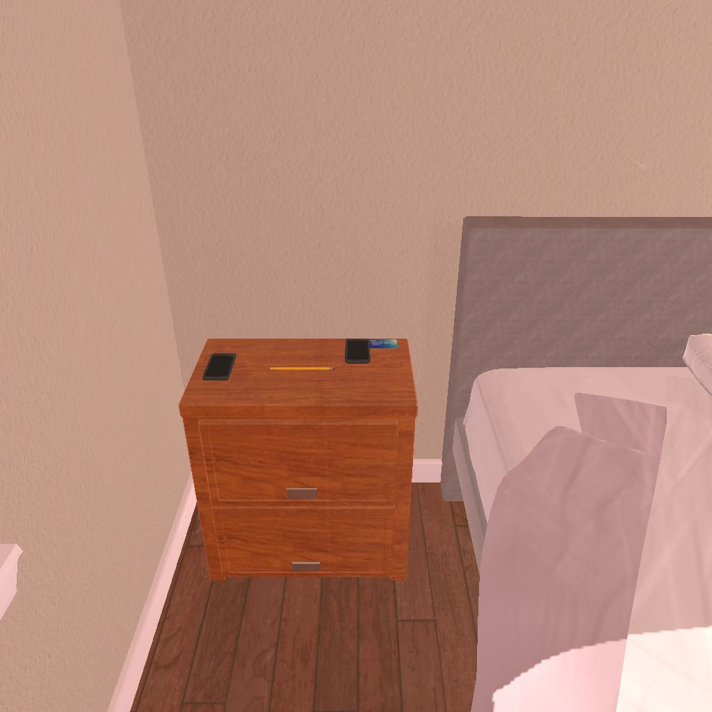

---------------------------------------------------------task: 6---------------------------------------------------------
--------------------------------------------------------------------------------------------------------------------------------------------------------------------
--------------------------------------------------------------------------------------------------------------------------------------------------------------------
Step:--------------------------------------------------------------------------7-------------------------------------------------------------------------------
----------------------------------------
VLM Prompt:
Image1:
Image2:
**Instruction**
1. Analyze the provided images to identify all visible household objects and compare the difference between images (e.h. whether the object is opened or not and taken on hand or not), focusing on those relevant to the task description "put some cd on safe."
2. Use the analysis of images and the task hint "The agent must find an object of the desired type, pick it up, find the correct location to place it, and put it down there." to answer the question: what is the most reasonable action in the choices for the task description "put some cd on safe"?
3. Decide and write the answer using the template: The answer is: (i): , where i is the real number. If there is no desired object in images, search every place based on **Initial Observation** to find the object. And if no one is exactly correct, choose a similar answer.
**Initial Observation**
You are in the middle of a room. Looking quickly around you, you can see bed (1-2), dresser (1), sidetable (1-2), drawer (1-11), desk (1), garbagecan (1), safe (1)
**Answer Choices**
(1): go to bed 1
(2): go to dresser 1
(3): go to bed 2
(4): go to sidetable 1
(5): go to drawer 2
(6): go to sidetable 2
(7): go to drawer 3
(8): go to drawer 4
(9): go to desk 1
(10): go to garbagecan 1
(11): go to drawer 5
(12): go to drawer 6
(13): go to drawer 7
(14): go to drawer 8
(15): go to drawer 9
(16): go to drawer 10
(17): go to drawer 11
(18): close safe 1
(19): take bowl 1 from safe 1
(20): take mug 1 from safe 1
(21): take cd 1 from safe 1
(22): take pen 1 from safe 1
(23): examine safe 1
**Answer**
Let's think step by step by following the instructions.
----------------------------------------
----------------------------------------
Original Response:
Firstly, we analyze the images. In Image 1, we see a bedside table with a phone and a pencil on it. In Image 2, we see a dresser with a microwave, a bowl, a mug, and a CD on it.
Next, we compare the differences between the images. There is no difference between the images concerning the task description "put some cd on safe" because none of the objects are opened or taken on hand.
Now, we use the analysis and the task hint to determine the most reasonable action for the task description "put some cd on safe." Since we can see a CD on the dresser in Image 2, the agent does not need to search every place based on the Initial Observation to find the CD.
Considering the answer choices, the most reasonable action would be to take the CD from the dresser and put it on the safe. However, there is no specific action listed for picking up the CD from the dresser. The closest action related to the CD is (21): take cd 1 from safe 1, but this implies that the CD is already in the safe, which it is not.
Since no action exactly matches the task of picking up the CD from the dresser and putting it on the safe, and we must choose a similar answer, the closest action we can select is to examine the safe, which might be the first step before placing the CD inside it.
The answer is: (23): examine safe 1.
----------------------------------------
----------------------------------------
>>> Refine Original VLM Response and Get Pure Action: examine safe 1
----------------------------------------
-----------------------------------------------------------------
Running time: 19.933322429656982 seconds
Total Money: 2.280560000000001
-----------------------------------------------------------------
-----------------------------------------------------------------
Text Observation:On the safe 1, you see a bowl 1, a mug 1, a cd 1, and a pen 1.
-----------------------------------------------------------------
UNSUCCEED